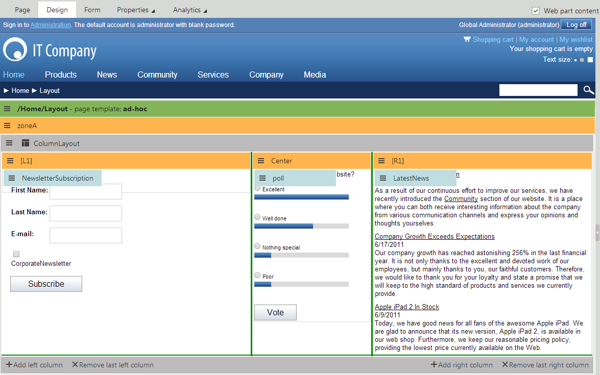

Working with layout web parts
Layout web parts allow you to define and modify the structure of portal engine page templates without the need to edit the code of page layouts. Each layout web part contains one or more child zones that are arranged in a specific way. You can configure the layouts just like standard web parts using properties, or even directly on the Design tab of the Pages application.
To create a page with a web part-based layout:
Open the Pages application.
Create a new page.
Select Create a blank page in the template selection dialog.
This creates a page with no layout and a single web part zone.
On the Design tab, add and configure the required layout web parts.
Fill in the page's content into the zones defined by the layout web parts.
In addition to defining flexible web part zones, some layout web parts also provide special functionality, such as:
Collapsible page sections
Zones with a fixed position
Graphical interfaces that allow users to select which zone's content the page displays
Adding layouts as widgets
Layouts can also be added to pages as widgets. This gives editors or other users without design permissions additional flexibility when it comes to arranging page content. The zones generated by layout widgets automatically match the type of the parent zone.
Users can place layout widgets onto their widget dashboards to help organize the content. When adding content into a layout on a dashboard page, you need to drag new widgets from their default location to the appropriate zone generated by the layout (it is not possible to add widgets into specific dashboard zones directly).
Editing the content of layout web parts
To add or edit the content of the zones generated by layout web parts, view the given page on the Design tab of the Pages application. You can manage the zones inside the layout like any other standard web part zones and add the required web parts.

Designing a page with a Columns layout web part
All default layout web parts have the Allow design mode property. If enabled, the Design tab provides additional zone management actions for the layout. You can dynamically resize individual layout zones by dragging the green lines on the borders. Layouts composed of multiple zones also allow designers to directly add or remove the sections that form the layout (columns, tabs etc.).
Once you add and configure the layout web part and all of its child web parts, the page displays the entered content on the live site using the specified structure.
Available layout web parts
Kentico provides the following layout web parts by default. You can find them in the Layouts web part category.
|
Layout web part |
Description |
|
Accordion layout |
Provides a layout divided into multiple panes that can be expanded or collapsed.
|
|
Collapsible panel |
Generates a web part zone inside a panel that users can expand or collapse. |
|
Columns layout |
Provides a CSS‑based column layout for content. Each column defines a separate web part zone. |
|
Rows layout |
Provides a row layout for content. Each row contains a separate web part zone. |
|
Table layout |
Provides a table layout for content. Each cell in the table defines a separate web part zone. |
|
Tabs layout |
Creates an AJAX tab layout.
|
|
Web part zone |
Adds a single web part zone to the page that you can use to group multiple web parts or assign additional formatting. |
|
Zones with effect |
Provides a list of elements that define separate web part zones. You can apply additional JavaScript effects (e.g. using jQuery) to the content displayed by the zones. You need to specify the scripts used to generate the effects through the web part's properties. |
|
Wizard layout |
Provides a layout divided into multiple steps.
|
Tip: If you cannot achieve the desired layout using the built-in web parts, you can create new layout web parts or customize existing ones to fulfill your requirements.
Preparing layouts with default content
Layouts with default content allow designers to quickly add reusable groups of functionality composed of multiple web parts. To set up the default content, create specialized versions of existing layout web parts:
Open the Web parts application.
Create an inherited web part based on a layout web part.
Open the Default content tab.
Click Configure default content.
Configure the layout and add child web parts just like when editing pages on the Design tab.
Note: The web part only uses the default content if you leave the Skip initial configuration property enabled on the General tab.
When you add instances of the inherited layout web part on the Design tab of pages, the system automatically inserts the default content into the layout's zones. The default content overrides the standard default values of the web part's properties.